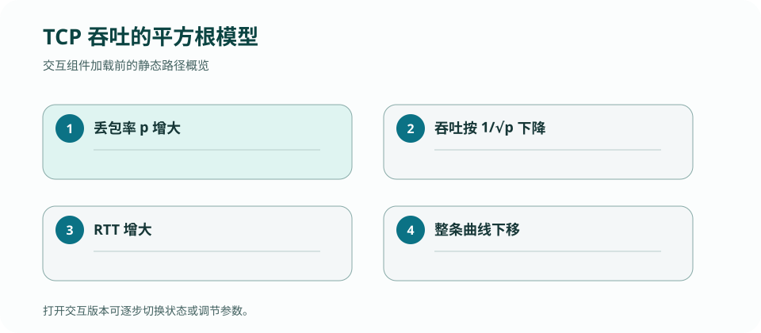

CS 168 · LECTURE 14 · 2026-10-13 · 传输
把拥塞控制从锯齿图推进到量化模型：RTT、丢包、队列与显式反馈如何决定吞吐和延迟。
版本快照：Fall 2026 官方课表与在线教材，核对日期 2026-09-02；官网仍标注 under construction，日期与政策可能变化。
为什么两个丢包率相同的 TCP 流，RTT 不同就可能得到完全不同的吞吐？
拥塞窗口从约 \(W/2\) 线性长到 \(W\)，平均约 \(3W/4\)。每轮发送窗口规模的数据，发生一次丢包大约对应 \(1/p\) 个包，可推得 \(W\) 与 \(1/\sqrt{p}\) 同阶。再除以 RTT 得到吞吐趋势。
模型假设随机独立丢包、ACK 行为稳定且主要由拥塞避免主导。无线误码、应用限速、短流或现代 BBR/CUBIC 可能不满足这些前提。
窗口按“每 RTT”增长，RTT 小的流在同一秒内试探更多次，因此增长更快。拥塞队列又会抬高所有流的 RTT，形成 bufferbloat：吞吐看似饱和，但交互延迟很差。
只以链路利用率评价算法会遗漏排队代价。更完整的观测包括 goodput、p50/p99 latency、loss/ECN、队列长度与公平性。
ECN 让路由器在队列尚未溢出时标记包，接收端把信号回送发送端。相比丢包，它不必先浪费数据；相比纯时延，它能更明确指出网络主动检测到拥塞。
DCTCP 等算法根据被标记字节比例估计拥塞程度，进行更细粒度收缩。优势依赖端点与交换机共同部署正确阈值。
路由器可以提供速率、队列或负载反馈，提高收敛速度，却需要协议字段、交换机行为和端点算法协同。跨域互联网难以一次升级所有节点，数据中心单一管理域则更容易部署。
评价新方案时必须声明拓扑、RTT、负载、队列、竞争流、重传与测量区间；一个裸“提升 2×”没有可迁移意义。
吞吐随丢包率平方根和 RTT 变化的参数关系适合直接操纵曲线。

固定 MSS 与丢包率，把 RTT 从 20 ms 调到 100 ms，先预测模型吞吐比例，再列出三个让实测偏离的条件。
检查：按 Reno 类近似模型，丢包概率从 p 增到 4p，其他量不变，吞吐约变为？
给定 RTT、loss probability 与瓶颈速率，先算窗口/RTT 上界，再判断是 sender、receiver 还是 network 成为瓶颈。
给定 RTT、loss probability 与瓶颈速率，先算窗口/RTT 上界，再判断是 sender、receiver 还是 network 成为瓶颈。
检查：判断一个实现分支是否必要，最有力的问题是什么？
改变 RTT 而保持窗口，预测 throughput 如何变。
答案必须出现 packet/message、local state/table、触发 event、after state 与 output；只给定义不算完成。
正文是 CourseStack 的中文解释与重新绘制的教学例子；官方页面负责课程原始定义，历史仓库只提供你的实现证据。